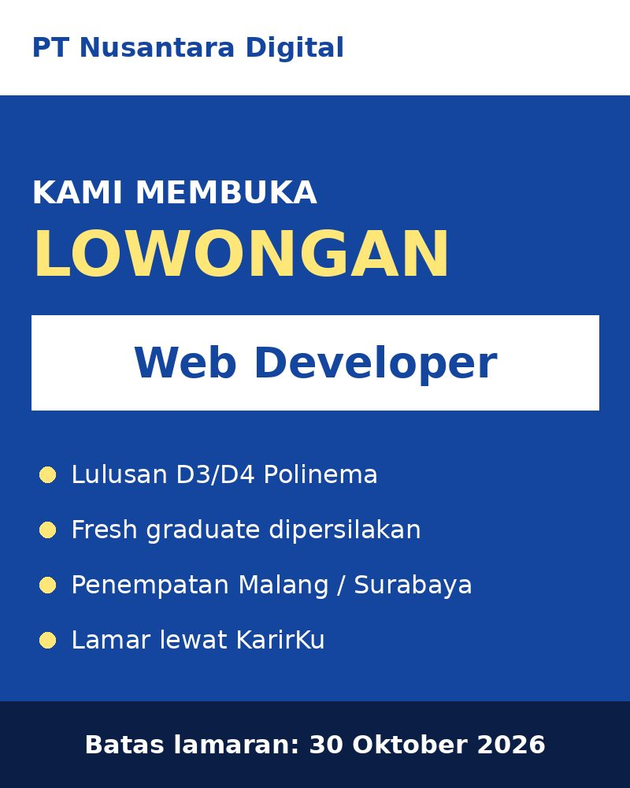
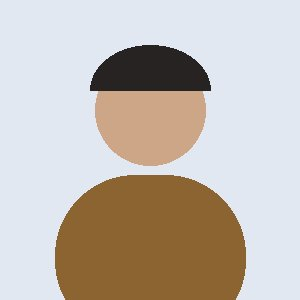
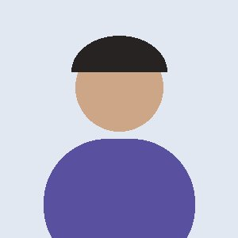

Selamat pagi, Career Center
Ringkasan KarirKu per 17 September 2026.
5
Menunggu verifikasi, 1 lewat 2 hari
1.284
Mahasiswa dan alumni aktif
58
Lowongan aktif dari 41 perusahaan
72%
Alumni 2025 sudah bekerja
Lamaran per bulan
Rekap lamaran120Apr
168Mei
210Jun
184Jul
256Agu
231Sep
Antrean verifikasi
Buka semuaAktivitas terbaru
- Budi Santoso diterimaPT Nusantara Digital, Web Developer10 menit lalu
- Lowongan baruCV Sinar Elektrik, Teknisi Listrik1 jam lalu
- Pendaftar baruPT Mitra Logistik1 jam lalu
- Lowongan ditutup otomatisPT Mesin Presisi, kuota terpenuhiKemarin
- Info loker dikirimDrafter Sipil ke admin Teknik SipilKemarin
Persetujuan akun
Periksa data dan dokumen pendaftar. Target selesai maksimal 2 hari kerja.
Kelola pengguna
Nonaktifkan akun yang melanggar ketentuan. Pengguna diberi tahu lewat email.
Monitoring lowongan
Semua lowongan dari seluruh perusahaan mitra.
Rekap lamaran
Seluruh lamaran dari semua perusahaan. Hanya untuk dilihat.
1.169
Total lamaran
412
Sedang diproses
186
Diterima
571
Ditolak atau dibatalkan
Per perusahaan
| Perusahaan | Pelamar | Diterima |
|---|---|---|
| PT Nusantara Digital | 75 | 6 |
| PT Mesin Presisi | 31 | 5 |
| KAP Wijaya & Rekan | 15 | 0 |
| PT Arta Konstruksi | 11 | 0 |
| CV Sinar Elektrik | 9 | 2 |
| PT Kimia Farma Jaya | 6 | 0 |
Kirim loker ke jurusan
Pilih lowongan, periksa pesan, lalu klik admin jurusan tujuan. WhatsApp langsung terbuka.
1. Pilih lowongan aktif
2. Periksa pamflet dan pesan

Unduh pamflet
Tautan pratinjau bisa dibuka admin jurusan tanpa masuk. Pamflet tampil sebagai gambar pratinjau di chat dan bisa diunduh untuk diteruskan ke mahasiswa.
3. Kirim ke admin jurusan
0 dari 7 terkirimTracer karier
Data diperbarui otomatis dari lamaran diterima dan status karier alumni.
Status karier alumni
412alumni
- Bekerja, 58%
- Wirausaha, 12%
- Studi lanjut, 10%
- Mencari kerja, 12%
- Belum mengisi, 8%
Sebaran bidang perusahaan
Level jabatan
Pembaruan terbaru
- Budi Santoso, TI 2022Bekerja di PT Nusantara Digital, Web DeveloperOtomatis dari lamaran diterima, hari ini

Dewi Lestari, TI 2021Wirausaha, studio desainDiisi sendiri, 3 hari lalu
Rizky Maulana, SIB 2021Mencari kerjaDiisi sendiri, 1 minggu lalu
Notifikasi
Budi Santoso (TI 2022) diterima di PT Nusantara Digital
Rekap lamaran dan tracer karier sudah diperbarui.
10 menit lalu 2 pendaftar baru menunggu verifikasi
Siti Rahma dan PT Mitra Logistik.
1 jam lalu Rizal Fahmi mengirim ulang data perbaikan
KTM baru sudah diunggah.
3 jam lalu 1 pendaftar menunggu lebih dari 2 hari kerja
CV Karya Mandiri, didaftarkan 12 Sep 2026.
Kemarin
Rekap lamaran dan tracer karier sudah diperbarui.
10 menit lalu 2 pendaftar baru menunggu verifikasi
Siti Rahma dan PT Mitra Logistik.
1 jam lalu Rizal Fahmi mengirim ulang data perbaikan
KTM baru sudah diunggah.
3 jam lalu 1 pendaftar menunggu lebih dari 2 hari kerja
CV Karya Mandiri, didaftarkan 12 Sep 2026.
Kemarin